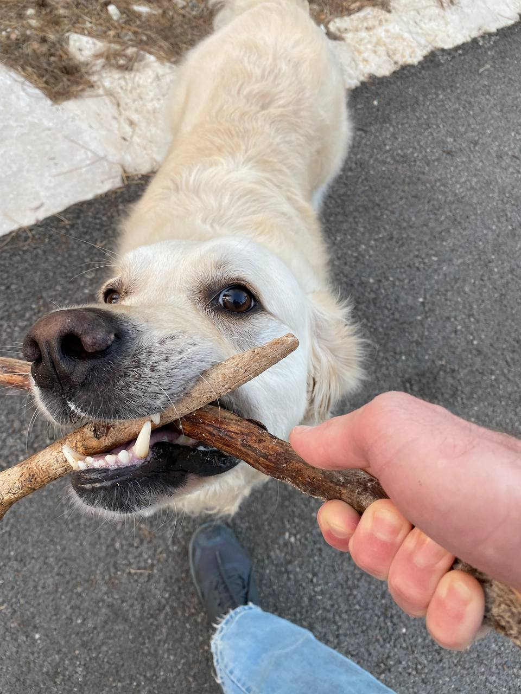
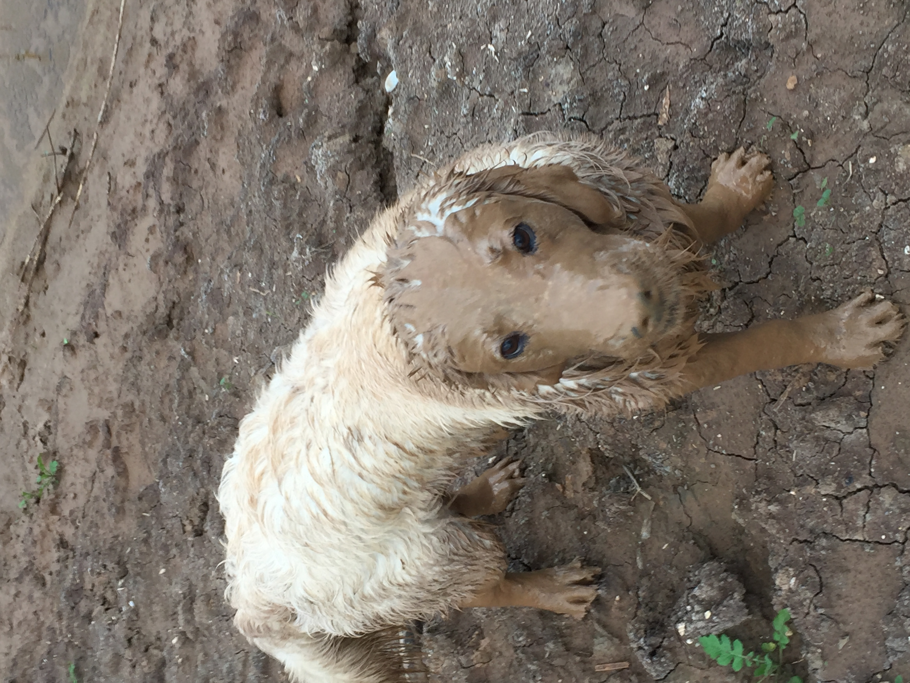

Bayli
Likes
Dislikes
About
Contact
- Playtime: Golden Retrievers are active and energetic dogs that love to play. They enjoy games of fetch, chasing toys, and playing with other dogs. Engaging in regular play sessions helps them release energy and keep them mentally stimulated.

- Outdoor activities: Golden Retrievers are often fond of outdoor activities such as hiking, swimming, and exploring. They have a natural affinity for water and are excellent swimmers, so taking them to the beach or a nearby lake can be a great source of enjoyment for them. Sometimes it looks like this.....

- Retrieving objects: As their name suggests, Golden Retrievers have a natural instinct for retrieving objects. They enjoy fetching balls, frisbees, or sticks and bringing them back to their owners. But Baily never gives anything back.
- Training and learning: Golden Retrievers are intelligent and eager to please, making them highly trainable. They enjoy learning new commands, tricks, and participating in obedience training. Engaging their minds through training sessions can be an enjoyable and rewarding experience for them. Bayli learned to read and now enjoys reading newspaper..
- Bonding with their family: Golden Retrievers thrive on human companionship and love being part of the family. They enjoy spending quality time with their owners, whether it's cuddling on the couch, going for walks, or simply being in the same room. They are known for their loyalty and affectionate nature.
- Socializing with other dogs: Golden Retrievers are generally friendly and get along well with other dogs. They enjoy socializing and playing with their canine friends. Dog parks or organized playdates can provide them with opportunities to interact and make new furry friends.
- Being involved in activities: Golden Retrievers often enjoy being part of various activities with their owners, such as agility training, therapy work, or participating in dog sports like obedience trials or dock diving. These activities provide mental stimulation and allow them to showcase their skills.